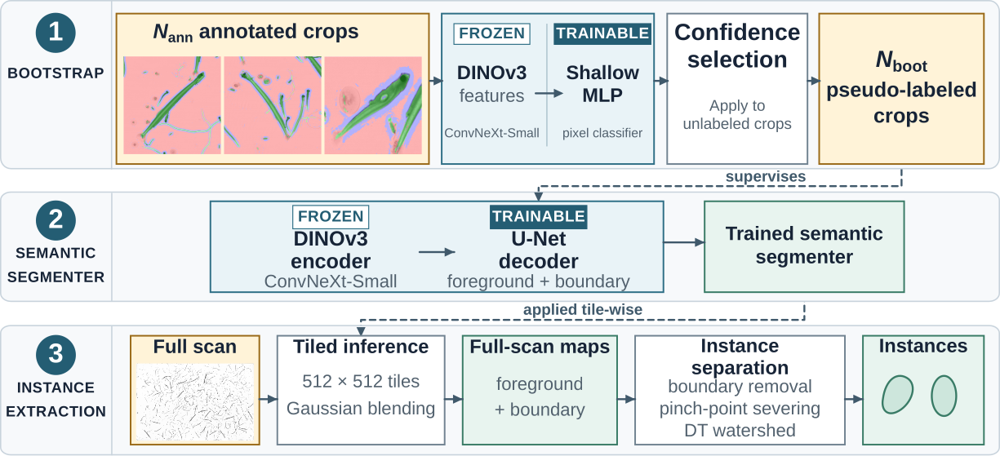

Marine Vision Workshop · ECCV 2026
Bootstrapped Watershed
Instance segmentation of plankton scans, learned from three annotated crops.
University of Rostock, Germany
The paper link goes live once the preprint is posted.
Abstract
ZooScan digitizes whole plankton samples, but extracting individual organisms depends on manually annotated training data — limiting when a single scan holds hundreds or thousands of touching organisms.
Bootstrapped Watershed is a few-shot instance-segmentation pipeline. Frozen DINOv3 features train a shallow MLP on three annotated crops, which then pseudo-labels further crops. Those pseudo-labels supervise a U-Net decoder on a frozen ConvNeXt-Small encoder. Full scans are processed as overlapping tiles combined by Gaussian blending, after which boundary removal, pinch-point severing and a distance-transform watershed recover individual instances.
Method

- Bootstrap. A shallow MLP over frozen DINOv3 features is trained on the three annotated crops, then scores an unlabeled pool. The 82 most confident crops are kept as pseudo-labels.
- Semantic segmentation. Those pseudo-labels supervise a U-Net decoder on the same frozen encoder, predicting foreground and boundary. Checkpoints are selected on boundary IoU — background IoU is near 1 regardless, so an averaged score hides boundary collapse.
- Instance extraction. A full scan is processed as 512 px tiles with 128 px overlap and Gaussian blending. Removing the predicted boundary, severing pinch points and running a distance-transform watershed separates touching organisms.
Results
Panoptic quality (higher is better) and over-segmentation ratio (closer to 1 is better) for every method in the table below.
| Method | PQ | Precision | Recall | OSR |
|---|---|---|---|---|
| MLP-S → ConvNeXt-UNet (ours) | 0.310 | 0.368 | 0.573 | 1.76 |
| Ablations | ||||
| U-Net only, no bootstrap (3 img) | 0.273 | 0.355 | 0.538 | 1.66 |
| RF → ConvNeXt-UNet | 0.263 | 0.304 | 0.429 | 1.51 |
| MLP-D → ConvNeXt-UNet | 0.247 | 0.310 | 0.488 | 1.69 |
| Baselines | ||||
| Mask2Former (Swin-T, zero-shot) | 0.171 | 0.323 | 0.202 | 0.60 |
| CellPose + RF mask | 0.102 | 0.132 | 0.128 | 0.85 |
| EcoTaxa (threshold) | 0.056 | 0.094 | 0.106 | 1.24 |
| StarDist + RF mask | 0.030 | 0.030 | 0.133 | 4.79 |
| StarDist (native, 3-img budget) | 0.003 | 0.004 | 0.011 | 2.85 |
| CellPose (native, 3-img budget) | 0.000 | 0.000 | 0.000 | 0.26 |
| Cellpose-SAM (zero-shot) | 0.000 | 0.000 | 0.000 | 1.61 |
One-to-one matching at IoU 0.5, macro-averaged over 15 held-out crops. OSR is the over-segmentation ratio Npred / Ngt; ideal is 1. The paper reports the SQ × RQ decomposition of PQ.
Open problem
Over-segmentation. At an OSR of 1.76 the method predicts roughly 1.8 instances for every true one, so the gain in recall comes with single organisms being split. Closing that gap without giving back recall is the main thing left to solve.
Citation
@inproceedings{tatraiya2026bootstrapped,
title = {Bootstrapped Watershed: Towards Few-Shot Instance ZooScan Segmentation},
author = {Tatraiya, Pratham and Globisch, Torben and
Fischbach, Vivian and Oehmcke, Stefan},
booktitle = {European Conference on Computer Vision (ECCV) Workshops ---
Marine Vision Workshop},
year = {2026}
}